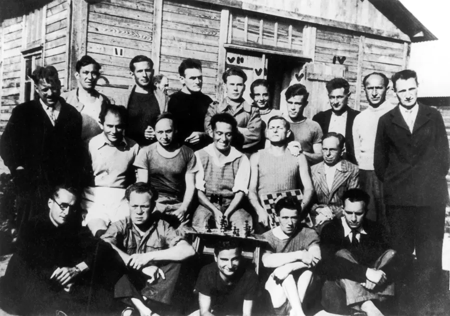

l'Avenue des Fusillés de Châteaubriant
Le 22 octobre 1941, 27 otages furent fusillés à Châteaubriant (Loire-Atlantique) en représailles de l'attentat qui coûta la vie au lieutenant-colonel allemand Holz, à Nantes. Lors de leur exécution, ils refusèrent tous d’avoir les yeux bandés et les mains liées. Ils moururent en chantant la Marseillaise. Parmi les fusillés se trouvait Guy Mocquet, âgé de 17 ans. Les fusillés de Châteaubriant ne furent pas les premiers otages à être exécutés en réponse à un acte criminel mais leur massacre fut le point de départ des exécutions massives perpétrées à titre de représailles par les Allemands.
